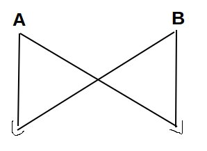
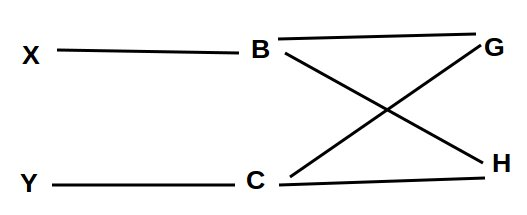
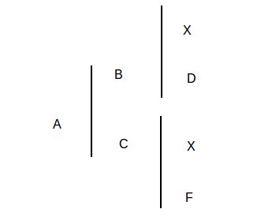

Fatores que alteram a frequência gênica
- Seleção
- Mutação
- Migração
Atilio S. Calefi
Med. Vet.
Consiste na escolha de determinados indivíduos de determinada população para reprodução. Visa aumentar as taxas dos genes destes indivíduos nas gerações seguintes do rebanho.
Verificar o efeito calculando a frequência alélica.
Considerando somente a seleção dos indivíduos A1A1 para seleção isso fez com que aumentasse para 60 animais marrons na população:
60 A1A1 + 40 A1A2 + 30 A2A2
Alelo A2 = 100
Total de Alelos = 260
f(A1) = 0.61
f(A2) = 0.39
A frequência do Alelo A1 era de 0.5 e passa a ser 0.63.
Uma população de 30 indivíduos marrons (A1A1); 30 indivíduos pretos (A2A2); 40 indivíduos castanhos (A1A2).
Se ocorrer uma migração de 60 indivíduos pretos qual a frequência dos alelos?
30 A1A1 + 40 A1A2 + 90 A2A2
Alelo A2 = 220
Total de Alelos = 320
f(A1) = 0.31
f(A2) = 0.68
A frequência do Alelo A2 era de 0.5 e passa a ser 0.68.
Indivíduos são considerados parentes quando possuirem em sua genealogia ao menos um acestral comum (genes em comum).
Ao cruzar um casal (A x B) e deles nascer dois indivíduos X e Y) ambos carregarão metade dos genes de cada pai.
\(R_{xy}\) (grau de parentesco entre X e Y) pode ser representado como?

Coeficiente de parentesco pode ser calculado como:
R\(_x\)\(_y\) = \(\sum\)\((1/2)^{n+n'}\)
\(R_{xy}\) = \(1/2 * 1/2 + 1/2 * 1/2\)
\(1/4 + 1/4\) = \(2/4\) = \(0.5\) = 50%


\({1/4}^4\) = 0.0625
\(R_{xy}\) = 0.0665 + 0.0625 = 0.125 = 12.5% = \(R_{xy}\)
Quando os pais de uma animal possuem um ou mais acnetrais comuns, dizemos que ele é consanguíneo.
Problema? Aumento da chance da ocorrência de genes recessivos homozigotos.
Ao longo das gerações ocorre o aumento da frequencia de animais homozigos com consequente redução dos heterozigotos.

Os efeitos de cruzamentos consanguíneos podem ser tanto positivos quanto negativos.
Desvantage: queda no valor adaptativo da espécie que pode levar a espécie a extinção. Queda de fertilidade e aparecimento de malformação.
Como contornar o efeito da consanguinidade no rebanho?
Introdução de reprodutor que não seja aparentado.